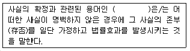

경비지도사-1차(법학개론,민간경비론) (2011-11-13 기출문제)
1과목: 법학개론
1. 법원(法源)에 관한 설명으로 옳지 않은 것은?
- 헌법은 국가의 이념이나 조직 및 작용에 관한 국가 최고의 기본법이다.
- 좁은 의미에서의 법률은 입법기관인 국회의 의결을 거쳐 제정ㆍ공포된 성문법을 의미한다.
- 일반적으로 승인된 국제법규는 국내법과 같은 효력을 가지지 않는다.
- 지방자치단체는 법령의 범위안에서 자치에 관한 규정을 제정할 수 있다.
(정답률: 49%)

2. 어떤 사항에 관하여 적용할 법규정이 없는 경우에 이와 성질이 유사한 다른 사항의 법규정을 적용하여 해석하는 방법은?
- 행정해석
- 유추해석
- 사법(司法)해석
- 반대해석
(정답률: 45%)
3. 특정한 사실상태가 일정기간 계속되는 경우에 그것이 진실된 권리관계에 합치하는지 여부를 묻지 않고 그 사실상태를 존중하여 그에 따른 법률효과를 인정하는 민법상의 제도는?
- 사실의 확정
- 일사부재리
- 시효
- 공소시효
(정답률: 44%)
4. 법의 분류에 관한 설명으로 옳지 않은 것은?
- 계수법은 국가ㆍ민족고유의 사회적ㆍ역사적 흐름속에서 자연적으로 생성되어진 법이다.
- 절차법은 권리나 의무의 실질적 내용을 실현하기 위한 절차에 관하여 규정하는 법이다.
- 특별법은 특정한 장소ㆍ사람ㆍ사물에 적용되는 법이며, 법의 적용에 있어서는 일반법에 우선하여 적용되는 법이다.
- 실체법은 권리나 의무의 발생ㆍ변경ㆍ소멸 등을 규정하는 법이다.
(정답률: 40%)
5. 사람은 ‘∼하여야 한다’고 명령하거나 또는 ‘∼해서는 안된다’고 금지하는 규범은?
- 임의규범
- 행위규범
- 재판규범
- 조직규범
(정답률: 61%)
6. 대륙법계와 영미법계에 관한 설명으로 옳지 않은 것은?
- 대륙법계는 성문법 중심의 법체계를 취하고 있다.
- 대륙법계는 관습법의 법원성(法源性)을 부정하지 않는다.
- 영미법계는 불문법인 판례법을 중심으로 하는 법체계를 말한다.
- 영미법계는 성문법의 존재를 부정한다.
(정답률: 57%)
7. 법과 도덕에 관한 설명으로 옳지 않은 것은?
- 법은 도덕보다 상대적으로 타율성이 강하다.
- 도덕은 법보다 평균인이 지키기 어려운 높은 이상을 지향한다.
- 법은 행위자의 고의나 과실을 고려하지 않는다.
- 도덕은 법보다 규범적인 측면에서 강제성이 약하다.
(정답률: 50%)
8. 성문법의 장점이 아닌 것은?
- 법의 통일ㆍ정비가 용이하다.
- 법적 안정성을 확보할 수 있다.
- 법의 의미와 내용이 명확하다.
- 급변하는 사회의 현실적 수요에 쉽게 대처할 수 있다.
(정답률: 69%)
9. ( ) 안에 들어갈 용어로 옳은 것은?

- 추정
- 간주
- 입증
- 준용
(정답률: 52%)
10. 헌법상 근로자에게 한정하여 보장하는 기본권이 아닌 것은?
- 단결권
- 단체교섭권
- 단체행동권
- 단체청원권
(정답률: 52%)
11. 감사원에 관한 설명으로 옳지 않은 것은?
- 감사원은 원장을 포함한 5인 이상 11인 이하의 감사위원으로 구성한다.
- 감사위원은 국회의 동의를 얻어 대통령이 임명한다.
- 감사원장과 감사위원의 임기는 4년으로 하며, 1차에 한하여 중임할 수 있다.
- 감사원은 대통령 소속하에 둔다.
(정답률: 33%)
12. 헌법상 국민의 기본적 의무가 아닌 것은?
- 납세의 의무
- 국방의 의무
- 부부간의 의무
- 근로의 의무
(정답률: 56%)
13. 국회의원에 관한 설명으로 옳지 않은 것은?
- 국회에서 직무상 행한 발언과 표결에 관하여 국회 외에서 책임을 진다.
- 청렴의 의무가 있다.
- 국가이익을 우선하여 양심에 따라 직무를 행한다.
- 법률안을 제출할 수 있다.
(정답률: 57%)
14. 국무위원 및 국무회의에 관한 설명으로 옳지 않은 것은?
- 국무회의는 정부의 권한에 속하는 중요한 정책을 심의한다.
- 국무총리는 국무위원의 해임을 대통령에게 건의할 수 있다.
- 행정각부의 장은 국무위원 중에서 국무총리의 제청으로 대통령이 임명한다.
- 국무총리는 국무회의의 의장이 된다.
(정답률: 49%)
15. 관습법과 사실인 관습에 관한 설명으로 옳지 않은 것은?
- 민사에 관하여 법률에 규정이 없으면 관습법에 의하고 관습법이 없으면 조리에 의한다.
- 상사에 관하여 상법에 규정이 없으면 상관습법이 있어도 민법을 우선 적용한다.
- 물권은 법률 또는 관습법에 의하는 외에는 임의로 창설하지 못한다.
- 법령중의 선량한 풍속 기타 사회질서에 관계없는 규정과 다른 관습이 있는 경우에 당사자의 의사가 명확하지 아니한 때에는 그 관습에 의한다.
(정답률: 45%)
16. 민법상 권리의 내용에 따른 분류가 아닌 것은?
- 인격권
- 사원권
- 재산권
- 항변권
(정답률: 44%)
17. 민법상 채권의 소멸원인이 아닌 것은?
- 변제
- 상계
- 담보설정
- 공탁
(정답률: 40%)
18. 민법상 실종선고에 관한 설명으로 옳지 않은 것은?
- 특별실종기간은 3년이다.
- 실종선고를 하기 위해서는 이해관계인이나 검사의 청구가 있어야 한다.
- 전쟁실종의 경우 실종기간의 기산점은 전쟁이 종지한 때이다.
- 실종선고를 받은 자는 실종기간이 만료한 때에 사망한 것으로 본다.
(정답률: 38%)
19. 민법상 대리권의 소멸사유가 아닌 것은?
- 본인의 사망
- 본인의 파산
- 대리인의 사망
- 대리인의 파산
(정답률: 36%)
20. 민법상 용익물권이 아닌 것은?
- 지상권
- 지역권
- 전세권
- 저당권
(정답률: 34%)
21. 민법상 전형계약에 해당하는 것은?
- 증여계약
- 여행계약
- 중개계약
- 진료계약
(정답률: 30%)
22. 민법상 주소에 관한 설명으로 옳지 않은 것은?
- 주소를 알 수 없으면 거소를 주소로 본다.
- 주소는 동시에 두 곳 이상 있을 수 없다.
- 국내에 주소없는 자에 대하여는 국내에 있는 거소를 주소로 본다.
- 어느 행위에 있어서 가주소를 정한 때에는 그 행위에 관하여는 이를 주소로 본다.
(정답률: 46%)
23. 민법상 증인이 필요 없는 유언방식은?
- 자필증서에 의한 유언
- 공정증서에 의한 유언
- 비밀증서에 의한 유언
- 구수증서에 의한 유언
(정답률: 46%)
24. 민사소송법상 원고가 소를 제기함에 있어서 청구의 성질ㆍ내용에 따라 분류하는 소(訴)의 종류가 아닌 것은?
- 이행의 소
- 확인의 소
- 책임의 소
- 형성의 소
(정답률: 40%)
25. 민법상 물건에 관한 설명으로 옳지 않은 것은?
- 전기(電氣)는 민법상 물건이 아니다.
- 토지 및 그 정착물은 부동산이다.
- 부동산 이외의 물건은 동산이다.
- 물건의 사용대가로 받는 금전 기타의 물건은 법정과실로 한다.
(정답률: 44%)
26. 형사소송법상 변호인이 없을 때 법원이 직권으로 국선변호인을 선정해야 하는 경우가 아닌 것은?
- 피고인이 사형, 무기 또는 단기 3년 이상의 징역이나 금고에 해당하는 사건으로 기소된 때
- 피고인이 미성년자인 때
- 피고인이 구속된 때
- 피고인이 빈곤으로 변호인을 선임할 수 없을 때
(정답률: 52%)
27. 甲을 배우자로 두고 있는 乙이 丙과 간통을 하였다. 이에 관한 설명으로 옳지 않은 것은?
- 甲이 乙을 유서(宥恕)한 때에는 간통죄로 고소할 수 없다.
- 甲이 乙과 丙을 고소한 이후에 乙에 대한 고소의 취소는 丙에 대하여도 효력이 있다.
- 甲이 乙을 상대로 이혼소송을 제기하지 않더라도 간통죄로 고소할 수 있다.
- 고소를 취소한 甲은 다시 고소하지 못한다.
(정답률: 31%)
28. 형법상 개인적 법익에 관한 죄가 아닌 것은?
- 살인죄
- 낙태죄
- 유기죄
- 위증죄
(정답률: 52%)
29. 형법상 형의 감경에 관한 설명으로 옳지 않은 것은?
- 종범의 형은 정범의 형보다 감경한다.
- 타인을 교사하여 죄를 범하게 한 자는 죄를 실행한 자보다 형을 감경한다.
- 미수범의 형은 기수범보다 감경할 수 있다.
- 농아자의 행위는 형을 감경한다.
(정답률: 50%)
30. 교사를 받은 자가 범죄의 실행을 승낙하고 실행의 착수에 이르지 아니한 때에는 교사자와 피교사자를 어느 경우에 준하여 처벌하는가?
- 음모 또는 예비
- 방조
- 미수
- 긴급피난
(정답률: 61%)
31. 형법상 형벌의 종류 중 재산형이 아닌 것은?
- 구류
- 벌금
- 과료
- 몰수
(정답률: 50%)
32. 형사소송법상 증거에 관한 내용으로 옳지 않은 것은?
- 사실의 인정은 증거에 의하여야 한다.
- 증거의 증명력은 법관의 자유판단에 의한다.
- 피고인의 자백이 그 피고인에게 불이익한 유일의 증거인 때에는 이를 유죄의 증거로 채택한다.
- 범죄사실의 인정은 합리적인 의심이 없는 정도의 증명에 이르러야 한다.
(정답률: 49%)
33. 범죄의 실행에 착수한 자가 그 범죄가 완성되기 전에 자의로 실행에 착수한 행위를 중지하거나 그 행위로 인한 결과의 발생을 방지하는 것은?
- 중지미수
- 불능범
- 장애미수
- 불능미수
(정답률: 60%)
34. 형법상 형의 집행에 관한 설명으로 옳지 않은 것은?
- 금고는 형무소에 구치한다.
- 과료는 판결확정일로부터 60일 내에 납입해야 한다.
- 사형은 형무소 내에서 교수(絞首)하여 집행한다.
- 벌금을 납입하지 아니한 자는 1일 이상 3년 이하의 기간 노역장에 유치하여 작업에 복무하게 한다.
(정답률: 38%)
35. 상법상 주식회사의 이사에 관한 설명으로 옳지 않은 것은?
- 이사는 법령과 정관의 규정에 따라 회사를 위하여 그 직무를 충실하게 수행하여야 한다.
- 이사는 재임중 뿐만 아니라 퇴임 후에도 직무상 알게 된 회사의 영업상 비밀을 누설하여서는 아니된다.
- 이사는 이사회의 승인이 없으면 자기 또는 제3자의 계산으로 회사의 영업부류에 속한 거래를 하거나 동종영업을 목적으로 하는 다른 회사의 무한책임사원이나 이사가 되지 못한다.
- 이사는 재무제표를 받은 날로부터 4주간내에 감사보고서를 감사에게 제출하여야 한다.
(정답률: 58%)
36. 상법상 일정한 상인을 위하여 상업사용인이 아니면서 상시 그 영업부류에 속하는 거래의 대리 또는 중개를 영업으로 하는 자는?
- 익명조합원
- 대리상
- 중개인
- 위탁매매인
(정답률: 39%)
37. 근로기준법에 관한 설명으로 옳지 않은 것은?
- 친권자나 후견인은 미성년자의 근로계약을 대리할 수 있다.
- 사용자는 근로시간이 4시간인 경우에는 30분 이상, 8시간인 경우에는 1시간 이상의 휴게시간을 근로시간 도중에 주어야 한다.
- 근로기준법에서 정하는 근로조건은 최저기준이다.
- 사용자는 근로계약 불이행에 대한 위약금 또는 손해배상액을 예정하는 계약을 체결하지 못한다.
(정답률: 56%)
38. 노동조합 및 노동관계조정법에 관한 설명으로 옳지 않은 것은?
- 노동조합의 조합원은 어떠한 경우에도 인종, 종교, 성별, 연령, 신체적 조건, 고용형태, 정당 또는 신분에 의하여 차별대우를 받지 아니한다.
- 노동조합은 그 규약이 정하는 바에 의하여 법인으로 할 수 있다.
- 사용자는 노동조합 및 노동관계조정법에 의한 단체교섭 또는 쟁의행위로 인하여 손해를 입은 경우에 노동조합 또는 근로자에 대하여 그 배상을 청구할 수 있다.
- 노동조합에 대하여는 그 사업체를 제외하고는 세법이 정하는 바에 따라 조세를 부과하지 아니한다.
(정답률: 31%)
39. 정부조직법에 관한 설명으로 옳지 않은 것은?
- 대통령은 정부의 수반으로서 법령에 따라 모든 중앙행정기관의 장을 지휘ㆍ감독한다.
- 국가유공자 및 그 유족에 대한 보훈, 제대군인의 보상ㆍ보호 및 보훈선양에 관한 사무를 관장하기 위하여 대통령소속으로 국가보훈처를 둔다.
- 국가안전보장에 관련되는 정보ㆍ보안 및 범죄수사에 관한 사무를 담당하기 위하여 대통령소속으로 국가정보원을 둔다.
- 중앙행정기관의 설치와 직무범위는 법률로 정한다.
(정답률: 43%)
40. 행정법상 준법률행위적 행정행위가 아닌 것은?
- 인가
- 확인
- 공증
- 통지
(정답률: 27%)
2과목: 민간경비론
41. 민간경비와 공경비의 차이점에 관한 설명으로 옳지 않은 것은?
- 한국 민간경비원에게는 원칙적으로 법집행권한이 허용되지 않는다.
- 범죄예방은 공경비만이 가지는 고유한 존재목적이다.
- 민간경비의 보호대상이 특정고객이라면 공경비의 보호대상은 일반시민이다.
- 민간경비의 주체가 영리기업이라면 공경비의 주체는 정부이다.
(정답률: 84%)
42. 민간경비의 개념요소에 관한 설명으로 옳지 않은 것은?
- 민간경비는 영리성을 본질적으로 가지고 있다.
- 민간경비에게 공공성을 요구하는 것은 민간경비의 본질에 반하는 것이다.
- 경비업법상 경비업의 종류는 시설경비, 호송경비, 신변보호, 기계경비, 특수경비에 한한다.
- 자연인은 한국의 신변보호업을 영위할 수 없다.
(정답률: 72%)
43. 우리나라의 경찰과 민간경비의 관계에 관한 설명으로 옳지 않은 것은?
- 경비업법상 경찰청장 또는 지방경찰청장은 경비업무의 적정한 수행을 위하여 경비업자 및 경비지도사를 지도ㆍ감독하며, 필요한 명령을 할 수 있다.
- 경찰활동의 재원은 세금이지만 민간경비의 재원은 고객이 지급하는 도급계약의 대가(代價)라고 할 수 있다.
- 경찰의 활동영역은 법령에 근거하는데 비해 민간경비의 활동범위는 경비계약에 근거한다.
- 수익자부담이론에 따르면 개인이나 단체의 사유재산보호는 기본적으로 경찰의 역할이라고 본다.
(정답률: 82%)
44. 한국 민간경비와 청원경찰의 특징에 관한 설명으로 옳지 않은 것은?
- 협의의 개념으로 민간경비는 고객의 생명ㆍ신체ㆍ재산보호를 위한 범죄예방활동을 의미한다.
- 실질적 개념으로 민간경비는 경비업법에서 규정하는 업무를 수행하는 활동을 의미한다.
- 청원경찰은 무기를 사용할 수 있다.
- 학교 등 육영시설에도 청원경찰을 배치할 수 있다.
(정답률: 67%)
45. ‘그냥 내버려두면 보호받지 못한 채로 방치될 재산을 민간경비가 보호한다’ 는 시각에서 출발한 민간경비 이론은?
- 수익자부담이론
- 공동화이론
- 이익집단이론
- 경제환원론
(정답률: 77%)
46. 한국의 민간경비 발전과정에 관한 설명으로 옳지 않은 것은?
- 한국의 민간경비는 미군에 대한 군납형태인 제한적인 형태의 용역경비로 시작되었다.
- 1976년에 용역경비업법이 제정되었다.
- 1960년대 이후 경제성장에 따른 산업시설의 증가와 더불어 영미법상의 제도인 청원경찰제도가 도입되었다.
- 1980년대에 기계경비가 성장하면서 경비업무의 기계화 및 과학화가 활성화되었다.
(정답률: 62%)
47. 각국의 민간경비 발전과정에 관한 설명으로 옳지 않은 것은?
- 일본의 민간경비는 1964년 동경올림픽을 계기로 성장하였다.
- 일본의 민간경비는 범죄예방 활동에 있어서 경찰과 긴밀한 협력관계를 유지하고 있다.
- 미국에서 핑커튼(A. Pinkerton)은 1850년대에 사립탐정업을 개업하였다.
- 미국의 서부지역은 동부지역과 달리 적은 인구와 강력한 공권력으로 인해 민간경비의 정착이 20세기 이후에 이루어졌다.
(정답률: 71%)
48. 일본 민간경비 산업의 특징에 관한 설명으로 옳지 않은 것은?
- 경비원지도교육책임자 제도가 있다.
- 기계경비업무관리자 제도가 있다.
- 일본경비협회가 실시하는 신변보호사 제도가 국가공인으로 활성화되어 있다.
- ‘경비택시제도’는 긴급사태가 발생하였을 때, 택시가 출동하여 관계기관에 연락하거나 가까운 의료기관에 통보하는 제도이다.
(정답률: 75%)
49. 미국과 일본의 민간경비제도에 관한 설명으로 옳지 않은 것은?
- 미국에서는 주 정부 관할 하에 주정부 별로 CPP(Certified Protection Professional) 제도를 시행하고 있다.
- 일본에는 교통유도경비에 관한 검정제도가 있다.
- 일본의 민간경비원은 법집행권한이 있다.
- 미국은 경찰관 신분을 가진 민간경비원이 활동하는 경우가 있다.
(정답률: 79%)
50. 영국에서 전근대적인 경비제도를 통합하여 근대 수도경찰조직을 만든 사람은?
- 로버트 필
- 헨리 필딩
- 헨리 웰스
- 러셀 콜링
(정답률: 76%)
51. 환경설계를 통한 범죄예방(Crime Prevention Through Environmental Design)에 관한 설명으로 옳지 않은 것은?
- CPTED는 환경적인 요소가 인간의 행동 및 심리적 성향을 자극하여, 범죄를 예방하는 환경행태학적 이론에 기초하고 있다.
- 전통적 CPTED는 공격자가 보호대상에 접근하지 못하도록 하는 방법을 주로 활용한다.
- 현대적 CPTED는 삶의 질 향상을 고려하지 않는다.
- CPTED의 기본전략은 자연적인 접근통제와 감시, 영역성의 강화에서 출발한다.
(정답률: 82%)
52. 민ㆍ경 협력 범죄예방에 관한 설명으로 옳지 않은 것은?
- 지역사회 경찰활동의 핵심은 경찰과 지역주민이 함께 지역사회의 문제해결에 노력해야 한다는 것이다.
- 자율방범대의 경우 자원봉사자인 지역주민이 지구대 등 경찰관서와 협력관계를 갖고 범죄예방활동을 행한다.
- 언론매체는 범죄예방활동에 효과가 없다.
- 경찰은 지역주민들의 자발적인 참여를 이끌어내기 위하여 지속적인 홍보활동을 해야 한다.
(정답률: 93%)
53. 경찰의 임무에 관한 설명으로 옳지 않은 것은?
- 법집행은 경찰이 수행해야 할 중요한 임무들 중의 하나이다.
- 질서유지는 공공의 평화를 증진시키고, 교통의 흐름을 원활하게 유지하는 활동 등을 의미한다.
- 치안정보수집은 경찰 임무에 해당되지 않는다.
- 성매매행위, 음란행위, 사행행위 등은 풍속사범의 단속대상에 해당된다.
(정답률: 86%)
54. 민간경비의 실시과정으로 옳은 것은?
- 경비진단 → 경비계획수립 → 조직화 → 경비실시 → 평가
- 경비진단 → 조직화 → 경비계획수립 → 경비실시 → 평가
- 경비계획수립 → 경비진단 → 조직화 → 경비실시 → 평가
- 경비계획수립 → 조직화 → 경비진단 → 경비실시 → 평가
(정답률: 77%)
55. 경비형태에 관한 설명으로 옳지 않은 것은?
- 계약경비는 자체경비에 비해 비용이 저렴하다.
- 자체경비는 기업체 등이 조직 내에 자체적으로 경비인력을 조직화하여 운용하는 것을 말한다.
- 계약경비는 중앙통제경보장치, 경비자문서비스, 무장차량경호 및 호송서비스 등 다양한 형태로 발전하고 있다.
- 최근에는 자체경비가 계약경비보다 더 빠르게 증가하고 있다.
(정답률: 66%)
56. 인력경비와 비교하여 기계경비의 장점이 아닌 것은?
- 장기적으로 볼 때 경비비용의 절감효과를 가져올 수 있다.
- 넓은 장소를 효과적으로 감시할 수 있다.
- 24시간 지속적으로 감시할 수 있다.
- 오경보의 위험성이 없다.
(정답률: 85%)
57. 특정의 위해요인과 관계없이 언제 발생할지 모르는 사항들에 대비하여 인력경비와 기계경비를 결합한 경비업무의 유형은?
- 1차원적 경비
- 총체적 경비
- 반응적 경비
- 단편적 경비
(정답률: 72%)
58. 경비업무 유형에 관한 설명으로 옳지 않은 것은?
- 순찰경비는 도보나 차량을 이용하여 정해진 노선을 따라 시설물의 상태를 점검하는 것이다.
- 상주경비는 중요산업시설, 상가, 학교와 같은 시설에 근무하면서 경비를 실시하는 것이다.
- 인력경비는 기계경비에 비해 사건 발생시 현장에서 신속하게 대처하기가 곤란하다.
- 기계경비는 경비대상시설에 설치한 기기에 의하여 감지ㆍ송신된 정보를 관제시설의 기기로 수신하여 도난ㆍ화재 등 위험발생을 방지하는 것이다.
(정답률: 88%)
59. 일반경비원 교육에 관한 설명으로 옳지 않은 것은?
- 일반경비원 교육은 신임교육과 직무교육으로 구분된다.
- 일반경비원의 직무교육은 경비업자가 실시한다.
- 일반경비원 교육을 받은 후 2년 동안 경비업무에 종사하지 아니하다가 일반경비원으로 채용된 사람은 신임교육을 다시 받아야 한다.
- 일반경비원에 대한 교육의 과목ㆍ시간 그 밖에 교육의 실시에 관하여 필요한 사항은 행정안전부령으로 정한다.
(정답률: 78%)
60. 보안업무와 관련하여 비밀 또는 주요시설 및 자재에 대한 비인가자의 접근을 방지하기 위하여 그 출입에 안내가 요구되는 구역은?
- 제한지역
- 통제구역
- 금지구역
- 제한구역
(정답률: 74%)
61. 내부경비에 관한 설명으로 옳지 않은 것은?
- 안전유리의 설치목적은 침입자의 침입시도를 완벽하게 저지하는 것보다는 침입시간을 지연시키는데 있다.
- 내부경비장치로서 생체인식 잠금장치는 불특정인의 출입이 허용되는 장소에서 일반적으로 사용된다.
- 내부에서 외부로의 반출뿐만 아니라 외부로부터의 내부 반입도 검색과 관리가 필요하다.
- 내부경비에 사용되고 있는 각종 잠금장치와 경보장치 등은 물리적 통제전략에 필요한 수단이다.
(정답률: 68%)
62. 화재발생의 단계에 따른 적용 감지기의 배열로 옳은 것은? (순서대로 초기단계, 그을린단계, 불꽃단계, 열단계)
- 이온감지기, 광전자감지기, 적외선감지기, 열감지기
- 광전자감지기, 적외선감지기, 이온감지기, 열감지기
- 적외선감지기, 광전자감지기, 이온감지기, 열감지기
- 이온감지기, 적외선감지기, 광전자감지기, 열감지기
(정답률: 72%)
63. 화재대책에 관한 설명으로 옳지 않은 것은?
- 화재는 열, 가연물, 산소 3가지 요소의 결합에 의해 발생하므로 각각의 성질을 파악해야 한다.
- 화재발생시 화염에 의한 사망자보다 연기와 유독가스에 의해 사망하는 경우가 많다.
- 목재류보다는 화학제품에서 많은 연기와 유독가스가 발생한다.
- 정비소, 보일러실과 같은 시설은 컴퓨터실보다 민감한 화재감지시스템을 설치하는 것이 바람직하다.
(정답률: 73%)
64. 시설물의 출입구 경비요령에 관한 설명으로 옳지 않은 것은?
- 출입문은 일정 수로 통제하고, 출입용도에 따라 달리 사용하도록 한다.
- 폐쇄된 출입구를 포함한 모든 출입문은 정기적인 확인이 필요하다.
- 출입문은 출입자의 편리성보다는 안전성이 우선적으로 고려되어야 한다.
- 상품판매시설의 경우 직원용 출입문과 고객용 출입문을 구분하는 것이 좋다.
(정답률: 76%)
65. 화재유형 중 물을 분사하여 발화점 밑으로 온도를 떨어뜨리는 것이 가장 효과적인 것은?
- 일반화재
- 유류화재
- 전기화재
- 가스화재
(정답률: 89%)
66. 잠금장치에 관한 설명으로 옳지 않은 것은?
- 핀날름쇠 자물쇠는 열쇠의 양쪽에 홈이 불규칙적으로 파여져 있는 형태로서 판날름쇠 자물쇠보다 안전하다.
- 카드식 잠금장치는 전기나 전자기방식으로 암호가 입력된 카드를 인식시킴으로써 출입문이 열리도록 한 장치이다.
- 열쇠가 분실될 경우를 대비하여 잠금장치의 문틀과 문 사이에 틈을 유지하는 것이 필요하다.
- 일체식 잠금장치는 원격조정에 의해 한 개가 개폐될 때 전체의 문이 동시에 개폐되는 장치이다.
(정답률: 61%)
67. 경비조명장치에 관한 설명으로 옳지 않은 것은?
- 가로등은 밝은 조명이 요구되는 보호시설 등을 비추는데 사용된다.
- 투광조명등은 상당히 밝은 빛을 내므로 특정지역에 빛을 집중시키거나 직접적으로 비추는데 사용된다.
- 프레이넬등은 넓은 폭의 빛을 내는 조명등으로서 경계구역으로의 접근을 방지하기 위해 길고 수평으로 빛을 확장하는데 사용된다.
- 탐조등은 휴대가 가능하며 잠재적으로 사고가 일어날 만한 지역을 정확하게 관찰하기 위해 사용된다.
(정답률: 55%)
68. 감지장치로서 동작전원이 필요 없고 구조가 간단하여 쉽게 설치할 수 있는 것은?
- 자석감지기
- 초음파감지기
- 적외선감지기
- 열선감지기
(정답률: 62%)
69. 경비위해요소의 유형 중 자연적 위해인 것은?
- 폭행
- 폭동
- 폭탄위협
- 폭풍
(정답률: 78%)
70. 경비위해요소 중 인지 단계에 해당하는 것은?
- 개인 및 기업의 보호영역에서 손실을 일으키기 쉬운 취약부분을 확인하는 단계이다.
- 경비보호대상의 보호가치에 따른 손실발생 가능성을 예측하는 단계이다.
- 특정한 손실이 발생하였다면 얼마나 심각한 영향을 미쳤는가를 고려하는 단계이다.
- 범죄피해로 인한 인적?물적 피해의 정도, 고객의 정신적 안정성, 개인 및 기업체의 비용부담정도 등을 고려하는 단계이다.
(정답률: 72%)
71. 컴퓨터 범죄의 특성으로 옳지 않은 것은?
- 컴퓨터 부정조작에 의한 경우 행위자가 조작방법을 터득한 이상 임의로 쉽게 사용할 수 있기 때문에 조작행위가 빈번할 수 있다.
- 컴퓨터범죄는 관련 전문지식을 가진 자들에 의한 경우가 많으며, 전통적 범죄보다는 죄의식이 희박한 경향이 있다.
- 컴퓨터 부정이용을 정당한 이용으로 위장하는 경우가 많고 발각이나 사후증명을 피하기 위한 수법이 지속적으로 발전되고 있어 범행 발견과 검증이 곤란하다.
- 고의에 의한 경우와 과실에 의한 경우, 그 결과가 달리 나타나므로 형사사법기관의 고의입증이 용이하다.
(정답률: 85%)
72. 컴퓨터시스템의 암호화에 관한 설명으로 옳지 않은 것은?
- 암호는 특정시스템에 대한 접근권을 가진 이용자의 식별장치라 할 수 있다.
- 허가받지 않은 접근을 차단하여 정보의 보안성을 확보하기 위한 것이다.
- 암호가 자주 변경되면 유지관리가 어렵기 때문에 가능한 한 암호수명(password age)을 오래하는 것이 좋다.
- 암호설정은 단순 숫자조합보다는 특수문자 등을 사용하여 조합하는 것이 바람직하다.
(정답률: 84%)
73. 컴퓨터 안전관리에 관한 설명으로 옳은 것은?
- 컴퓨터시스템을 보호하는데 있어서 절차적 통제는 물리적 통제보다 중요시된다.
- 컴퓨터실은 허가된 사람에 의해서만 출입이 가능하도록 하고 접근권한의 갱신은 정기적으로 검토될 필요가 있다.
- 컴퓨터실의 화재감지는 이온감지기를 사용하고 화재발생시에는 스프링클러를 사용하는 것이 바람직하다.
- 컴퓨터시스템의 보안성 유지를 위하여 프로그램 개발자와 컴퓨터 운영자를 통합하여 운용하도록 한다.
(정답률: 65%)
74. 은행의 이자에서 단수로 처리되는 소액의 금액을 자동으로 한 개의 계좌에 이체되도록 하는 컴퓨터범죄 유형은?
- 슈퍼재핑
- 살라미수법
- 논리폭탄
- 트랩도어
(정답률: 82%)
75. 산업보안 문제 및 예방대책에 관한 설명으로 옳지 않은 것은?
- 기업 내부직원이 외부와 연계하여 기업비밀을 유출할 경우 적발이 쉽지 않다.
- 기업보안사항에 접근하는 자에게 비밀보장각서 또는 계약서를 작성하게 하는 것은 인권침해 우려가 있어 금지하고 있다.
- 산업스파이에 의한 손실은 일반적인 침입절도에 의한 손실보다 그 규모면에서 큰 경향이 있다.
- 비밀취급인가자의 범위는 가능한 한 최소한으로 제한하는 것이 바람직하다.
(정답률: 86%)
76. 국가안전에 미치는 중요성에 따라 국가중요시설을 분류할 때, 국가보안상 국가경제 또는 사회생활에 중요하다고 인정되는 행정시설 및 산업시설에 해당하는 것은?
- 가급 중요시설
- 나급 중요시설
- 다급 중요시설
- 기타급 중요시설
(정답률: 54%)
77. 한국 민간경비산업의 현황 및 발전방안에 관한 설명으로 옳은 것은?
- 민간경비의 수요 및 시장규모가 일부 지역에 편중되어 있다.
- 최근에 기계경비를 배제하고, 인력경비를 중심으로 변화하면서 민간경비의 질적 향상이 도모되고 있다.
- 청원경찰과 민간경비의 일원적 운용으로 인해 여러 문제점들이 발생되고 있다.
- 경찰 및 교정업무의 민영화 추세는 민간경비업 감소의 한 요인이 된다.
(정답률: 82%)
78. 의료시설 경비에 관한 설명으로 옳지 않은 것은?
- 위험요소의 사전예방보다는 사후대응에 중점을 두어야 한다.
- 출입구 배치나 출입제한구역 설정은 안전책임자와 병원관계자의 협의에 의해 이루어질 수 있다.
- 지속적으로 수용되는 환자 및 방문객들의 출입에 따른 관리상의 어려움이 있다.
- 의료시설에서 응급실은 안전관리가 철저하게 이루어져야 한다.
(정답률: 84%)
79. 교육시설 경비에 관한 설명으로 옳지 않은 것은?
- 교육시설의 위험요소 조사 시 지역사회와의 상호관계는 고려대상에서 제외된다.
- 교육시설의 범죄예방활동은 계획 → 준비 → 실행 → 평가 및 측정의 순서로 이루어진다.
- 교육시설 보호 및 이용자 안전 확보를 목적으로 한다.
- 교육시설의 특별범죄예방의 대상에는 컴퓨터와 관련된 정보절도, 사무실 침입절도 등이 포함된다.
(정답률: 59%)
80. 금융시설 경비에 관한 설명으로 옳지 않은 것은?
- 금융시설의 특성상 개ㆍ폐점 직후나 점심시간 등이 취약시간대로 분석되고 있다.
- 특수경비업의 성장으로 인해, 특수경비원이 금융시설경비를 전담하고 있다.
- 금융시설 내에 한정하지 않고 외부경계 및 차량감시도 경비활동의 대상에 포함된다.
- 경찰과 범죄예방정보의 교환이 필요하다.
(정답률: 70%)